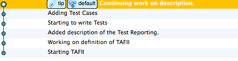

Before you can share with others, you need to decide where you will be sharing. Everything that has been done up to this point in the tutorial has happened on a single machine. The commits that we have been doing have been recorded to the repository on the local machine. The good part of this is that commits are very fast and we can do them when we do not have access to a “server”. The other side of it is that a commit does not save the information to another machine. To share with others we need a “server” to push our code to so everyone can have access.
Git Server Options
Git offers many options for setting up a server. As with any server technology these options can be complex and involve decitions relating to security and network performance. As such, I would recomend using a service like GitHub. This frees you from having to learn about deployment options and server setup. Alternately you may have a Git server that has already been setup by your employer or someone else on your team. Obviously in this case you will use that server. If you are determined to setup your own server, I recomend getting a package like GitHub for Windows or Bonobo.
Working with Remotes
As we have already discussed the repository is actually on your local computer. The most common pattern for sharing across a teaam is to setup a central. I will not walk through getting a local repository into a server repository (thought this is possible), instead let us assume that you have a repository on your server. We need to make that repository one of the repomtes for your local repository.
git clone [URL] [folder]For example
git clone ssh://git@vm-git/GitinitWebSite.git C:\Source\GitinitWebSite We talked about creating a local repository by running the git init command. When you are working with a remote server you will create the repository on the server (however it makes sense for your server) and then clone the repository. This will also setup the remote relationship automatically.
Like git init this results in a repository on your local machine. A cloned repository is nearly identical to a locally initialized repository. The one difference is that the cloned repository will have a remote listed showing the origin of the repository. The origin is important for commands that work between repositories.
git fetch [repository] This command requests any changes from the repository specified. If the local repository was cloned from the remote repository, then you can leave the repository name off, git fetch. Though this retrieves any commits that are on the remote server, but not on yours, it does not resolve the two different lines of development.
Distributed Development Reality
When you are working on the master branch on your local machine, it is likely that other people are pushing changes to the remote repository master branch. One way to think of this is as if there were two branches. Development on two different branches can be merged. This results in a history graph that looks like this:

If we actually had multiple branches, that would be fine, but we are working on the same branch. So we need a new method of getting two different lines of development aligned. For Git the command is git rebase. This takes the commits you have made to your local master branch and apply them to the remote master branch. This leads to a linear history like this:

But what about the git pull command? git pull is like issuing a git fetch followed by a git merge. Though this will work you will find most shops use rebase for work on the same branch. Merging is used for bringing branches back together.
Don’t Cross the Streams
Merging and Rebasing work fine together as long as you don’t use both commands on the same commits. The repository will become corrupt if you do. Though this would be an uncommon mistake it is worth noting the risk.
Who’s The Master?
master is the name of the trunk or main branch in a repository. If no other branches are created, then all work will be on the master branch. We’ll talk more about branches in the next section.
Now Back to Our Regularly Scheduled Program
More explanation is probably in order. Let’s get back to understanding what happens when bringing changes from to repositories together. Let’s consider the following set of changes on your local master branch:
9227e1 --- ca8249 --- ca93a4 --- 495254 (master)Let’s say that development on the origin server looks like this:
9227e1 --- ca8249 --- 390b06 --- 181df7 (master on origin)After a fetch your local repository will look something like this:
9227e1 --- ca8249 --- ca93a4 --- 495254 (master)
\ --- 390b06 --- 181df7 (origin/master) Note that these “branches” are actually both the master branch. So we need to get them back together as a single branch.
git rebase This tells Git that we want all the commits on a single line. So Git applies the local commits to origin/master. If there are no conflicts then everything happens automatically. If one of your changes effects the same section of a file that was changed on the origin, then you will be asked to merge the changes. Once you are done merging you will need to continue the rebase.
git rebase --continue Now git will continue to apply your local commits to the origin/master branch. Once the rebase is done your local repository will look something like this:
9227e1 --- ca8249 --- 390b06 --- 181df7 --- f62e30 --- a993fe (master)
\ --- (origin/master) Now that you have your new set of commits, you obviously need to test them. Assuming you feel that the changes are sound, you will want to share them with the rest of the world. That command is git push. The advantage of the work that you just did to resolve any conflicts is that there will not be any on the remote machine. So now the local repository will look like this:
9227e1 --- ca8249 --- ca93a4 --- 495254 --- f62e30 --- a993fe (master)(origin/master)and the remote repository will look like this:
9227e1 --- ca8249 --- ca93a4 --- 495254 --- f62e30 --- a993fe (origin/master)What’s With The Branch Names
The names of the branches (master) and (origin/master) represent two different branches in your local repository. The master branch is the local trunk of your repository. The origin/master branch is a tracking branch of the remote (origin) master branch. So when you fetch changes from the remote they go on this branch. Tracking branches are important for working with remotes. We’ll talk about them more in the next section.
What’s With the Numbers?
We mentioned the commit numbers previously. They are SHA1 hashes of the commit changes. As such they are unique. This is important for a distributed system. This way each repository can assign commit numbers without being concerned about a conflict with another repository. That is why the commits are identified by these really long numbers such as fa047ea4ba24314ce9e0225a766ab0ea401f8ab1. The good news is that you never have to type in the whole number. You only need to enter enough of the number to be unique on your local system. Six digits is almost always sufficient, so you will see the commit IDs written as the first six numbers like this fa047e. Any command that is looking for a commit will also take this shorthand version.
There is another shorthand version of referring to commits relative to the HEAD of the the current branch. The HEAD of the current branch is the the final commit on that branch. You can then refer to commits relative to the HEAD. So the commit 2 before the HEAD can be referred to as HEAD~2. This should look familiar from the Fixing Mistakes lesson.
Resolving Conflicts
Git adds standard conflict-resolution markers to the files that have conflicts. You can open them manually and resolve those conflicts.
<<<<<<< HEAD:index.html
<div id="footer">contact : email.support@github.com</div>
=======
<div id="footer">
please contact us at support@github.com
</div>
>>>>>>> origin\master:index.html This means the version in HEAD is the top part of that block (everything above the =======), while the version in origin\master looks like everything in the bottom part. When resolving conflicts with a text editor I will create a new “merged” section right under the >>>>>>> line that is what I want in the final version:
In order to resolve the conflict, you have to either choose one side or the other or merge the contents yourself. For instance, you might resolve this conflict by replacing the entire block with this:
<<<<<<< HEAD:index.html
<div id="footer">contact : email.support@github.com</div>
=======
<div id="footer">
please contact us at support@github.com
</div>
>>>>>>> origin\master:index.html
<div id="footer">
please contact us at email.support@github.com
</div> Then I remove the lines from the <<<<<<< to the >>>>>>> line. Leaving only this in the file:
<div id="footer">
please contact us at email.support@github.com
</div>This conflict was pretty trivial, however sometimes the conflicts are more involved. In these cases it may be desirable to use a graphical tool to manage the merge.
git mergetool
merge tool candidates: kdiff3 tkdiff xxdiff meld gvimdiff opendiff emerge vimdiff
Merging the files: index.html
Normal merge conflict for 'index.html':
{local}: modified
{remote}: modified
Hit return to start merge resolution tool (opendiff):Git recognizes merge tools that it finds on your system. It will pick one as the default, but if you want to use a merge tool other than the default (Git chose opendiff for me in this case because I ran the command on a Mac), you can see all the supported tools listed at the top after “merge tool candidates”. Type the name of the tool you’d rather use.
After you exit the merge tool, Git asks you if the merge was successful. Tell the script that it was and it stages the file to mark it as resolved for you.
Where Were We?
Getting back to what we were talking about before, the flow of commands is:
git fetchgit rebase- Check Your Changes
git pushYou need to fetch and rebase before you can push your changes. Git will not allow you to send your commits to a remote server unless you have all of the commits from that server resolved. In this way you must resolve any conflicts prior to pushing them back to the server. This is more than just a minor point of reference with Git. It is integral to why Git can work in a distributed manner. Most SCM tools allow the resolution of conflicts to be passed downstream. With Git each user is required to resolve any conflicts before they can be shared with other users. This means that though there is no guarantee that the changes will “work” it is guaranteed that no one downstream will need to resolve conflicts.
We are almost done with our introduction to Git. In the next section we will talk about branching and go over the complete workflow again. In the final section we will look at resources for additional reading about Git.